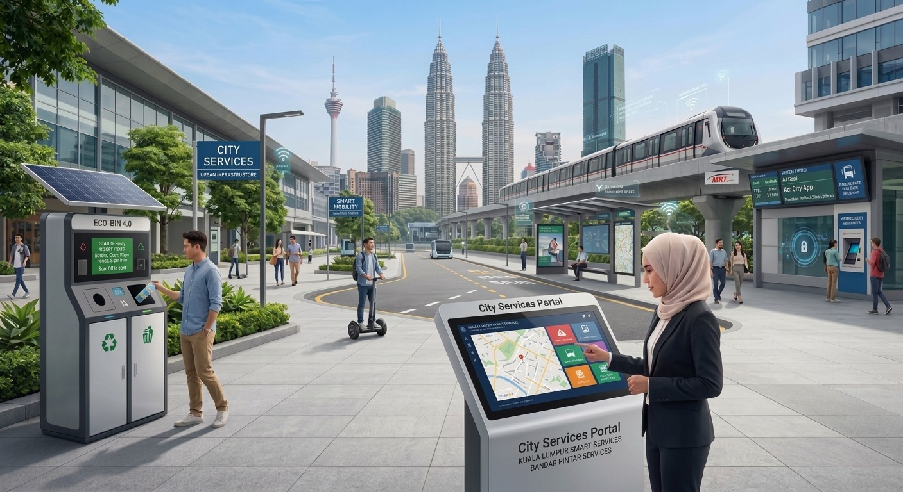

Smart Urban Services

Smart urban services use connected technologies and data to improve essential city services and the quality of life for residents. These solutions help cities respond faster, manage resources effectively and create safer communities.
Key Features
- Smart street lighting
- Waste management
- Water management
- Public safety systems
- Smart city monitoring